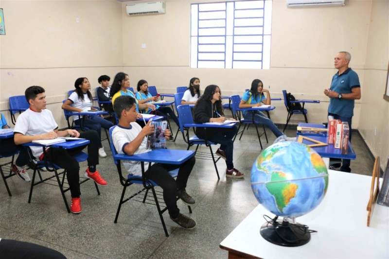
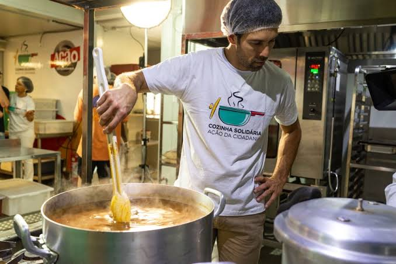
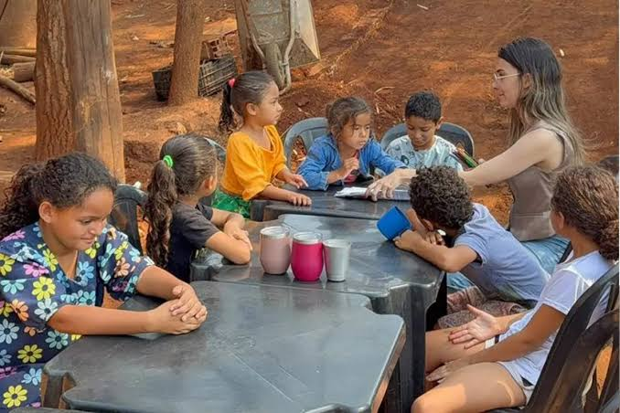

Reforco escolar
Aulas gratuitas para, criancas, adolecentes e adultos.

Aulas gratuitas para, criancas, adolecentes e adultos.

Alimentos frescos cultivados e divididos entre 80 familias.

Essa hora dedicada a entender oque estamos sentindo e como posso melhorar e ajudadr o proximo
Precisamos de professores, cozinheiros, profissionais de saude e apoio administrativo. Escolha um horario que caiba na sua semana.
Quero ser voluntarioDoacoes mensais ou unicas mantem os projetos. Pix: doe@nossacasa.com. Publicamos relatorios de prestacao de contas a cada trimestre.